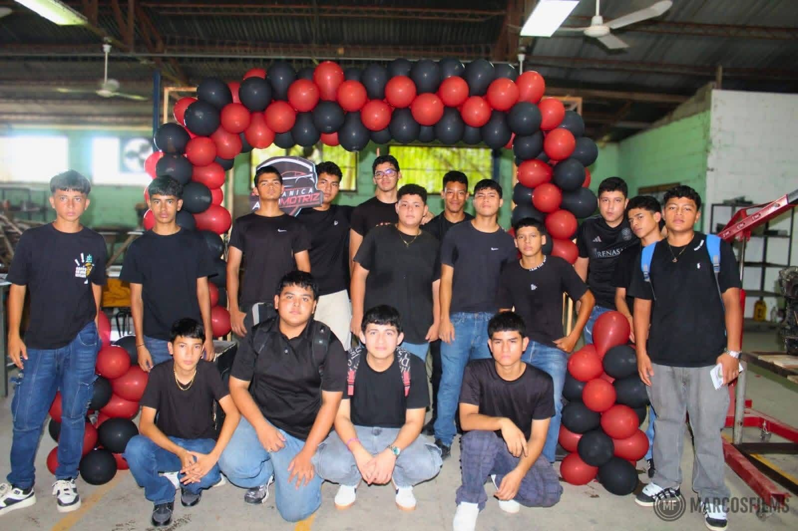

La carrera de mecánica (ingeniería o técnica) se enfoca en el diseño, fabricación, mantenimiento y reparación de sistemas mecánicos, térmicos y automotrices. Abarca áreas como motores, mecatrónica y manufactura, siendo vital en sectores industriales y automotrices.Ingeniería Mecánica: Diseño y análisis de sistemas, maquinaria y procesos de manufactura. Ingeniería Automotriz: Especializada en el diseño, desarrollo y diagnóstico de vehículos (motores, seguridad, sistemas electrónicos).Mecatrónica: Combina mecánica, electrónica y sistemas computacionales para automatización.Mantenimiento Industrial: Enfocada en la optimización y reparación de maquinaria en plantas productivas. Electromecánica: Fusión de sistemas eléctricos y componentes mecánicos.